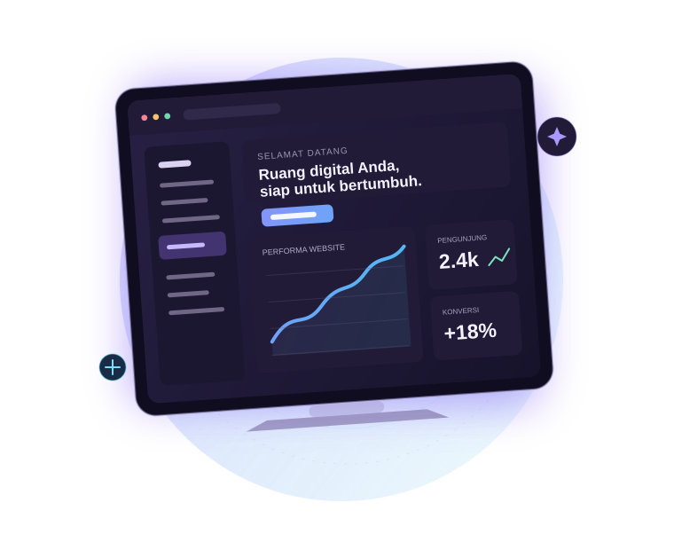
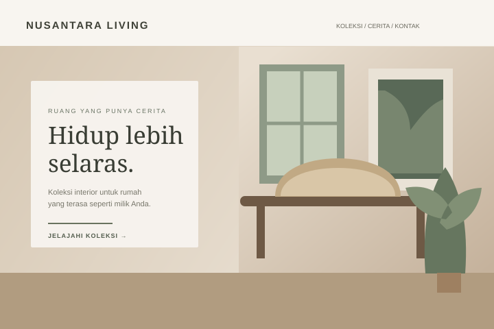
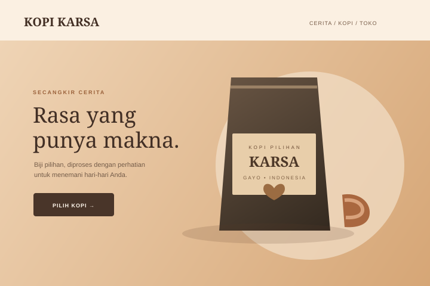
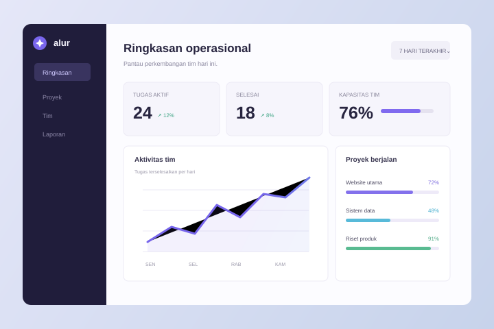

Visi
Membuat teknologi digital yang mudah diakses dan memberi nilai nyata bagi bisnis.
PARTNER DIGITAL UNTUK BISNIS
Kami merancang website dan solusi digital yang membantu bisnis tampil lebih kuat, bekerja lebih cerdas, dan siap berkembang.

MEMBANGUN PENGALAMAN DIGITAL UNTUK
TENTANG NOVATECH
NovaTech Digital adalah agensi teknologi fiktif yang berfokus pada pembuatan website dan solusi digital untuk bisnis. Kami memadukan desain yang cermat, teknologi yang tepat, dan kolaborasi yang transparan.
Membuat teknologi digital yang mudah diakses dan memberi nilai nyata bagi bisnis.
Menghadirkan solusi yang fungsional, terukur, dan dirancang bersama pengguna.
Angka dan pernyataan di bagian ini bersifat ilustratif, bukan klaim kinerja bisnis nyata.
APA YANG KAMI KERJAKAN
Dari kehadiran online pertama hingga sistem yang menopang operasional, kami membantu mengubah kebutuhan menjadi pengalaman digital yang berguna.
Perkenalkan cerita, layanan, dan keunggulan bisnis dengan website profesional yang mudah dijelajahi.
Bahas kebutuhanEtalase online yang terstruktur untuk menampilkan produk dan mendukung perjalanan belanja pelanggan.
Bahas kebutuhanAplikasi berbasis web untuk membantu mengelola data, alur kerja, dan kebutuhan operasional.
Bahas kebutuhanRuang digital untuk komunitas dan organisasi berbagi informasi, program, serta kegiatan.
Bahas kebutuhanPembaruan konten dan perawatan berkala agar website tetap relevan, rapi, dan terjaga.
Bahas kebutuhanPUNYA KEBUTUHAN LAIN?
PILIHAN KONSEP
Contoh konsep visual berikut dibuat untuk demonstrasi. Ini bukan portofolio pekerjaan klien yang telah dirilis.

DEMO PROJECTKonsep website brand interior dengan fokus pada cerita dan koleksi produk.

DEMO PROJECTEksplorasi toko online sederhana untuk brand kopi lokal fiktif.

DEMO PROJECTKonsep dashboard untuk membantu tim melihat ringkasan alur kerja.
Semua nama dan tampilan proyek di atas adalah demonstrasi. Tautan demo belum tersedia.
CARA KAMI BEKERJA
Bukan sekadar tampilan. Kami memperhatikan bagaimana setiap bagian membantu orang mencapai tujuannya.
Ceritakan ide AndaPengalaman tetap nyaman di ponsel, tablet, maupun desktop.
Struktur yang jelas memudahkan pengembangan dan kolaborasi.
Navigasi dan konten dirancang untuk mudah dipahami.
Fondasi yang rapi mendukung pemeliharaan dan pembaruan.
CONTOH DEMONSTRASI
“Bagian ini disiapkan untuk menampilkan cerita dan pengalaman klien setelah ada ulasan yang benar-benar diberikan dan telah mendapat izin untuk dipublikasikan.”
MARI TERHUBUNG
Ceritakan kebutuhan Anda. Kita bisa mulai dengan percakapan sederhana.
Email dan nomor WhatsApp di atas adalah data contoh yang perlu diganti sebelum website dipublikasikan.